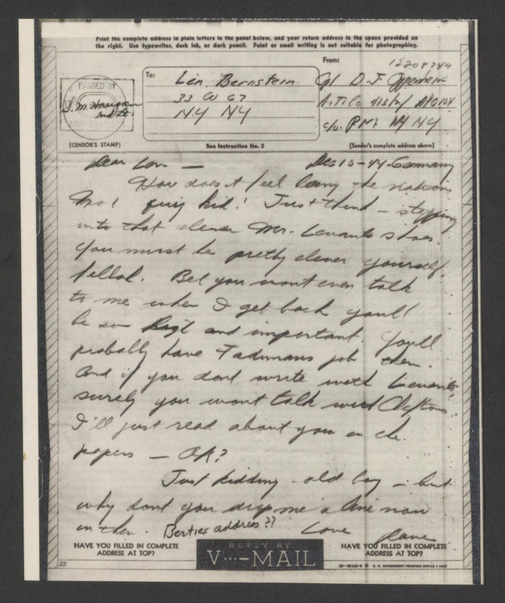
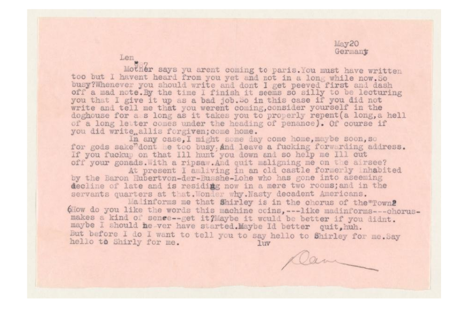
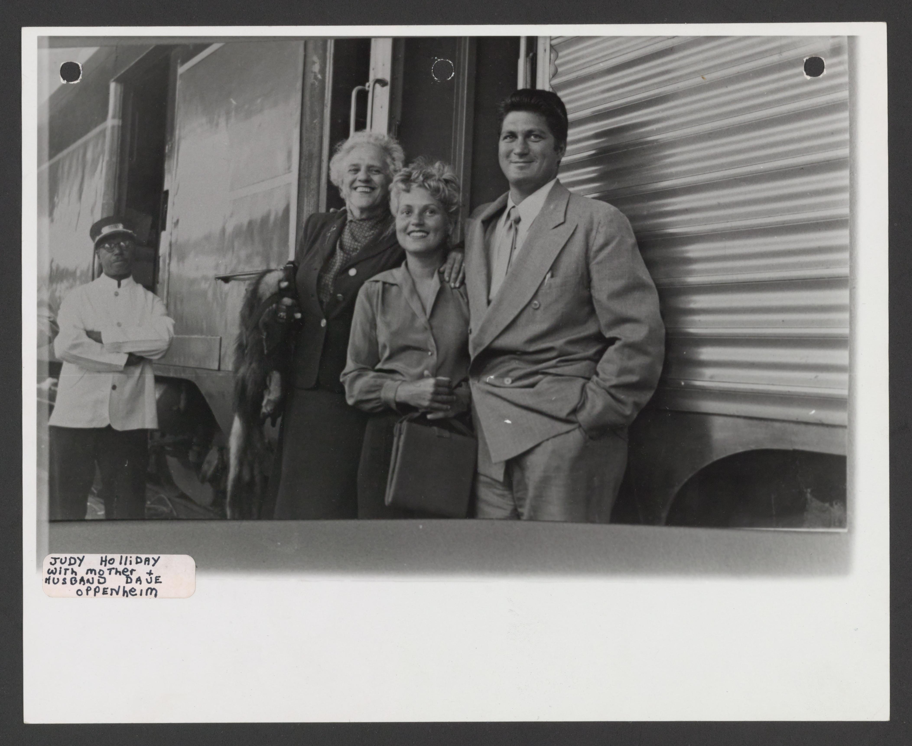

Leonard Bernstein (right) and David Oppenheim (left), ready to leave after recording session. Date taken unknown. PHOTO: LIBRARY OF CONGRESS
Leonard Bernstein, the renowned conductor and composer, and David Oppenheim, then a clarinetist, met in the summer of 1940. The relationship between the two men is dramatized as an on-again-off-again romantic affair in “Maestro” (2023, dir. Bradley Cooper); but little is actually known about their relationship, or the exact nature of it, though it is presumable that it was romantic at some point. Bernstein even dedicated his Sonata for Clarinet and Piano to Oppenheim, which both men played for the New York premiere in 1943.
Oppenheim would later be drafted to serve in World War II. Bernstein was disqualified from the army on account of his asthma.
Below are selected letters between the two men, archived by the Library of Congress.
Leonard Bernstein to David Oppenheim
October 5, 1943. New York City.
Dear David:
I just ran across, in moving, your ink copy of a little known piece of mine called “TWO”. Which set all kinds of memories, delicious and otherwise, in motion. I have a tremendous desire to see you again. Is there any possibility? Where are you? (I’m taking a chance on your last address, as of last summer.) Why did you fertile crop of letters from the army suddenly stop? You never answered mine, you know; or did you never receive it?
So much has happened since our last contact that it is impossible even to begin to deliver information. Life has been marvelous, hectic, and unreally beautiful since my fantastic appointment [as assistant director of the New York Philharmonic], of which you must have read somewhere! It was a real shock to me, since I had had no inkling of it, beyond a rumor that I might become one of three assistants! And, I had never met Rodginski [Artur Rodziński] (who turns out to be a swell and honest guy.) The position is unprecedented for one such as me, and a really historic step, in terms of other young conductors. But I must see you to tell you, as The Frau says, “what is really going on.”
I have a fine large apartment in Carnegie Hall, from which I can literally walk on to the stage. It’s quite beautiful, and I’m having a very quaint experience furnishing it, and it has an extra bed for you, and my own bathroom & kitchenette. If you are within 100 miles of New York at any time, please let me know, & come to town. In fact, let me know where you are in any case.
The day before my appointment was revealed to me, I was rejected might and main by the army for asthma.
Aaron [Copland] returns next week. Write, & spend your furloughs here — Love, Lenny
On November 14, 1943, Bernstein made his conducting debut with the New York Philharmonic, called on short notice to lead the entire program after guest conductor Bruno Walter fell ill. His success that evening propelled him to stardom, as the New York Times carried the story on its front page the next day and other outlets throughout the country followed suit.
David Oppenheim to Leonard Bernstein
December 10, 1944. Germany.

Dear Len —
How does it feel being the nation’s hot [going?] kid! Just think — stepping into that clever Mr. Leonard [star?]! You must be pretty clever yourself fellah. Bet you won’t even talk to me when I get back you’ll be so high and important. You’ll probably have Fadiman’s job then. And if you don’t write with … surely you won’t talk with [Cleftons?]. I’ll just read about you in the papers — OK?
Just kidding, old boy, but why don’t you drop me a line now an’ then. (Berties address ??) Love Dave
David Oppenheim to Leonard Bernstein
May 20 (year unknown, presumably 1945). Germany.

Len
Mother says yu [sic] aren’t coming to paris. You must have written too but I havent heard from you yet and not in a long while now. So busy? Whenever you should write and dont I get peeved first and dash off a mad note. By the time I finish it seems so silly to be lecturing you that I give it up as a bad job. So in this case if you did not write and tell me that you werent coming, consider yourself in the doghouse for as long as it takes you to properly repent (a long, a hell of a long letter comes under the heading of penance). Of course if you did write, all is forgiven; come home.
In any case, I might some day come home, maybe soon, so for gods sake, dont he [sic] too busy. And leave a fucking forwarding address. If you fuckup on that Ill hunt you down and so help me Ill cut off your gonads. With a ripsaw. And quit maligning me on the airsee?
At present I am living in an old castle formerly inhabited by the Baron Hubertvon-der-Busshe-Lohe who has gone into a seeming decline of late and is residing now in a mere two rooms; and in the servants quarters at that. Wonder why. Nasty decadent Americans.
Madinforms [sic] me that Shirley is in the chorus of the “Town 26”. How do you like the words this machine coins,---like madinforms—-chorus-makes a kind of sense — get it? Maybe it would be better if you didnt. maybe I should never have started. Maybe Id better quit, huh. But before I do I want to tell you to say hello to Shirley for me. Say hello to Shirly for me. luv
Oppenheim struggled with his sexual orientation, and in letters to Bernstein, he wrote that he was considering marrying the actress Judy Holliday — a mutual friend of the two men — as a coverup. Bernstein had also suggested this in the past.
Oppenheim and Holliday eventually married in 1948, then divorced in 1957. He would then marry and divorce a second time, before marrying Patricia Jaffe in 1987. (Bernstein, for his part, married Felicia Monteleagre Cohn in 1951, and stayed in that marriage despite his affairs with other men, of which Felicia was well aware and seemingly tolerated — to varying degrees.)
Leonard Bernstein to David Oppenheim
n.d., Written note under poem.
Note reads: This happened after seeing you. It is my private invocation of whatever gods there are (if they will listen to a sonnet) to bring you your hearts’ desires.
J ury please note: and Justice be warned:
U nction is not for this Maple and Pine:
D estiny neither: they ask for no sign from
Y esterday’s oracle, sibyl or seer.
A answers of ominous birds are amiss:
N o nuptial impermeability this:
D darkness may never envelop their kiss.
D ark all you seers, you sibyls of sin,
A auspicious, oracular, prolix and vain:
V alid remain for the children of Cain: but
E xorcised — out — from this Maple and Pine.
O nly the front-lines of faith they desire:
P possible truth, and truth under fire.
P resent hem with these, and you bless them entire.
.
L ove,
B lessings.

Judy Holliday (center) with her mother (left) and then-husband David Oppenheim (right). PHOTO: LIBRARY OF CONGRESS
Oppenheim and Bernstein would continue to send each other postcards and telegrams over the years, though they became shorter and less frequent later in Bernstein’s life.
Oppenheim worked as a TV producer in the 1960s, when he helped to produce a documentary featuring Bernstein entitled “Leonard Bernstein and the New York Philharmonic.” He also worked for a time at CBS, before later being appointed dean of New York University’s Tisch School of the Arts, in 1969.
Leonard Bernstein to David Oppenheim
April 12, 1983. Telegram via Western Union.
DEAR DOVIDL I LOVE YOU
LENNY
Bernstein’s last archived communication to Oppenheim.
Leonard Bernstein to David Oppenheim
April 12, 1989. Telegram via Western Union.
HAPPY DAVID’S DAY
LOVE
LENNY
David Oppenheim to Leonard Bernstein
August 29, 1990.
Dear L
You have disappeared so I suppose you are in some medical institution. I hope for minor adjustments to the much abused [illegible] I think of you all the time, have since early summer. I have no desire to intrude but if there is any way I can help please let me know. Much love.
D.
Bernstein retired from conducting on October 9, 1990.
David Oppenheim to Leonard Bernstein.
October 10, 1990.
Dear Lenny,
If I were sick I wouldn’t see anyone either. If you decide to make an exception maybe it will be me. I hope so. I miss you and I love you.
David.
Bernstein died four days later, from cardiac arrest associated with mesothelioma. Oppenheim died in 2007. ■